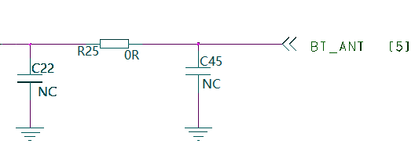
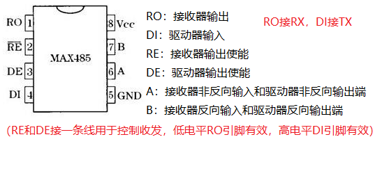
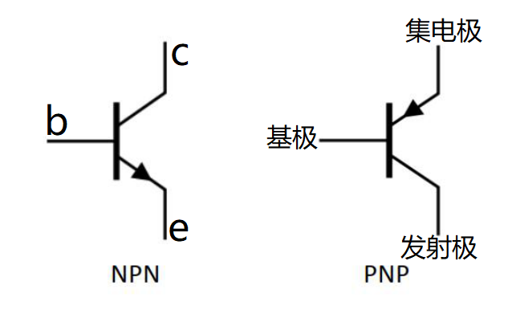

硬件设计开发软件：Altium Designer、PADS、Cadence等
如何测试一个输出引脚的高低电平：1.使用万用表测量；2.使用示波器测量，这里同时能测量出电平的波形；3.使用稳压电源测量，将此脚作为 GND，另一端接电源，若此脚为高电平则有电流输出，否则没有电流。
Π型电路：

UART：通用异步收发传输器，rx读、tx写、GND地、VCC电源，参数有波特率、数据位、奇偶校验位、起始位、停止位，接线测试时可不接 VCC 电源，但必须接 GND
PIN：电源、时钟、控制、I/O（gpio、功能复用[如spi、i2c、uart等]）
ADC：模数转换器，取样、保持、量化、编码
CAN：控制局域网络
I2C：半双工、双向二线制同步串行总线，sda为双向数据线（收发），scl为双向时钟线（时钟控制），主从方式，可多主多从
PWM：脉冲宽度调制，模拟信号进行数字编码
RTC：实时时钟
SPI：sclk 为串行时钟线，mosi 为主输出从输入的数据线，miso 为主输入从输出的数据线，cs 为从设备选择线，串行外设接口，一主多从，全双工同步通信（如 EEPROM、FLASH、AD 转换器）
WLAN：wifi无线中间件
SENSOR：传感器
TOUCH：触摸芯片
485：半双工，以一个使能引脚控制数据的收发（如发送拉低，接收拉高），以 MAX485 芯片为例

uart 转 485 实现：
if(send_buff != NULL){
continue;
}else{//数据发送完毕
if(idle_flag){//空闲标志位
usleep(x);//加段延时（延时时间根据实际串口参数改动，如波特率越低，延时越大）
pin(rs485_en, true);//拉高 485 使能脚
}
}
232：
方波实现：代码上是高低电平相间，然后每个电平转换加入延时，即可实现方波
电流：带电质点的定向运动形成电流，单位安培（A）
电压：电场中某两点间的电压（降）等于将单位正电荷从一端移至另一端电场力所做的功，单位伏特（V）。
电功率：单位时间内电场力所做的功，功率单位瓦特（W），能量单位焦耳（J）
电源：表示各种将其他形式的能量转换成电能的元件
电阻：理想电阻是只有阻值，和两端电压电流形成热功率。表示消耗电能的元件。
电阻串联：各电阻顺序连接流过同一电流，总电压等于各串联电阻的电压之和，电压与电阻成正比。
电阻并联：各电阻两端分别接在一起，两端为同一电压，总电流等于流过各并联电阻的电流之和，等效电导等于并联的各电导之和
电容：理想电容只有容值，没有串联电阻和引线电感。表示各种电容器产生电场，储存电能作用
电感：只有电感值，无内阻。表示各种电感线圈产生磁场，储存电能的作用
二极管：半导体材料制成的一种电子期间，具有单向导电特性。理想特性是正向偏置时压降较低，固定；反向偏置时截止，电阻无穷大，电流为0。实际导通压降受电流营销，反向有最大击穿电压。
分类：开关二极管、稳压二极管、发光二极管、肖特基二极管（金属半导体二极管）、TVS二极管（瞬态抑制二极管）
三极管（晶体管）：有PNP和NPN两种，集电极（c）、基极（b）、发射极（e）

截止区：简单讲就是三极管未导通；放大区：发射结正偏，集电结反偏；饱和区：发射结正偏，集电结正偏。
三极管实现开关原理，当处于截止区时打开，三极管处于饱和区关闭
MOS管：金属氧化物半导体场效应管，是通过电压建立（或关闭）导电通道进行控制的半导体器件，与二极管和三极管比，是压控器件
防护器件：静电防护为ESD（静电防护管），脉冲群防护器件为共模电感、三端气体管等，浪涌防护器件为TVS（瞬态抑制二极管）、ZOV（压敏电阻）、GDT（气体管）
PCB：印制电路板，主要由绝缘基板、印制导线、焊盘组成。
PCB层设置：信号层、内部电源/接地层、机械层（放置物理边界和尺寸标注等信息，起提示作用）、其他层（丝印层：PCB板top和bottom层表面绘制元器件的外观和轮廓和放置字符串等；其他工作层：禁止布线；钻孔导引层；钻孔图层；复合层）
PCB元器件封装：实际元器件焊接到PCB的焊接位置和焊接形状（包括外形、尺寸、管脚间距等）
负载：将电能转换为其他形式能量或对信号进行处理
交变电流：
支路：电路中流过同一电流的每个分支。
节点：支路的连接点称为节点。
路径：两节点间的一条通路。路径由支路构成
回路：由支路组成的闭合路径。
网孔：对平面电路，每个网眼即为网孔。网孔是回路，但回路不一定是网孔
推挽输出：硬件上设计复杂，软件上类似 485 控制脚，拉高拉低即可实现
冯.诺伊曼结构和哈佛结构：
1.冯.诺伊曼结构：又称普林斯顿结构，是一种将程序指令存储器和数据存储器合并在一起的存储器结构，采用二进制表示数据和指令
2.哈佛结构：将程序指令存储器和数据存储器分开的存储器结构。中央处理器首先到程序指令储存器中读取程序指令内容，解码后得到数据地址，再到相应的数据储存器中读取数据，并进行下一步的操作（通常是执行）。程序指令储存和数据储存分开，数据和指令的储存可以同时进行，可以使指令和数据有不同的数据宽度，如 Microchip 公司的 PIC16 芯片的程序指令是 14 位宽度，而数据是 8 位宽度。
通常具有较高的执行效率。其程序指令和数据指令分开组织和储存的，执行时可以预先读取下一条指令。
区别：
1.相同点：使用两个独立的存储器模块，分别存储指令和数据，每个存储模块都不允许指令和数据并存。
2.不同点：性质不同，冯·诺依曼体系结构冯·诺伊曼理论的要点是计算机的数制采用二进制，计算机应该按照程序顺序执行。哈佛结构是一种将程序指令存储和数据存储分开的存储器结构；
特点不同，哈佛结构将程序和数据存储在不同的存储空间中，即程序存储器和数据存储器是两个独立的存储器，每个存储器独立编址、独立访问。诺依曼结构的计算机运行过程中，把要执行的程序和处理的数据首先存入主存储器，计算机执行程序时，将自动地并按顺序从主存储器中取出指令一条一条地执行；
组成不同，哈佛结构的计算机由 CPU、程序存储器和数据存储器组成。诺依曼结构指令由操作码和地址码组成。
哈佛结构采用独立的程序总线和数据总线来分别作为 CPU 和每个存储器之间的专用通信路径，即冯.诺伊曼结构是处理器用一根总线连通存储器（数据和程序），而哈佛结构是处理器一个程序总线连程序存储器，另一根数据总线连数据存储器。
DSP：数据信号处理器，